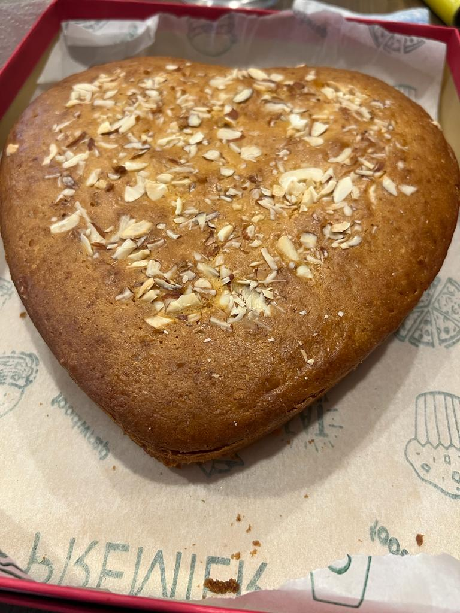

CAKE

INGRIDIENTS
- 250 GM+1tbps all purpose flour
- 60 ml butter
- 125 ml powdered sugar
- 125 ml curd+2 tbps condensed milk
- 2 tbps milk powder
- 1/2 tsp baking powder
- 50 gm tutti frutti and dry fruit
- 1 tsp vanilla essence
- 180 ml milk
- 11 tsp vinegar
INSTRUCTIONS
- Take a bowl.Add tutti frutti and dry fruits and coat them in 1 tbps flour
- Take a big bowl.Add butter and powdered sugar.Mix them till creamy.Add curd,condensed milk and mix it.
- Take a sieve.Add all dry ingridients.Sieve them and add to wet ingidients.
- Add tutti frutti,dry fruits and vanilla essence.Add milk in small quantities to make ribbon like consistencies.
- Add vinegar and pour it in baking tray.
- Pre heat the oven at 180 degree and bake the cake for 30-35 min. Cake is ready to serve.